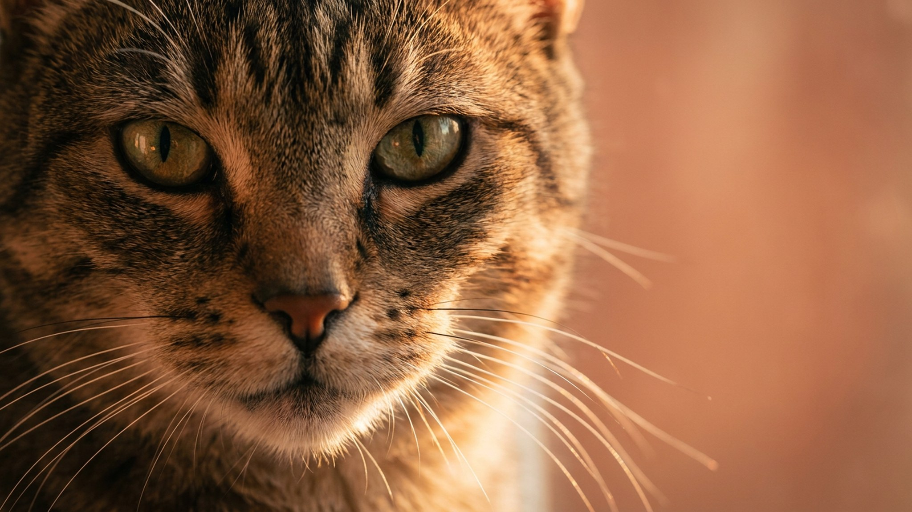

Первая официально признанная бразильская порода выросла на городских улицах Сан-Паулу и Рио - без хозяев, без плановых осмотров, без привилегий. Это сформировало кошку с крепким иммунитетом, острым умом и охотничьей хваткой, которую не вытравишь даже в самой тихой квартире. Владельцы бразильской короткошёрстной получают не декоративного питомца, а активного компаньона со своим мнением насчёт расписания дня.
🐾 У вас бразильская короткошёрстная?
AnimaLife соберёт уход под породу: к каким болезням есть склонность, что проверять по возрасту, чем кормить и когда пора к врачу. Бесплатно, прямо в мессенджере.
Собрать план ухода → Собрать в MAX →
У вас iPhone? AnimaLife есть в App Store
Работу по стандартизации начал бразильский фелинолог Пауло Самуэль Локо в 1980-х. Он отбирал уличных кошек с типичной для региона внешностью: средние по размеру, атлетичные, с короткой блестящей шерстью без подшёрстка. В 1998 году порода получила международное признание WACC. Важный момент: в основе породы нет импортных линий. Это чисто бразильская история.
Уличное прошлое осталось в генетике. Порода отличается широким генофондом - а это значит меньше наследственных проблем, характерных для узких линий. Ни одного породоспецифического заболевания в стандарте не зафиксировано.
Бразильская короткошёрстная - кошка контактная. Она идёт за хозяином по квартире, приносит игрушки, влезает в каждое дело. Тишину переносит хуже, чем движение и шум.
Голос у породы есть, но не настырный. Кошка скорее придёт и ткнётся лбом, чем будет орать на кухне.
Короткая плотная шерсть без подшёрстка - одно из практических преимуществ породы. Вычёсывание раз в неделю резиновой щёткой или замшевой тканью убирает отмершие волоски и придаёт шерсти блеск. В период линьки (весна и осень) можно перейти на 2 раза в неделю.
Купают редко - по необходимости. Когти подрезают раз в 3-4 недели. Уши и зубы проверяют при еженедельном осмотре.
Бразильская короткошёрстная - порода с высоким уровнем энергии. 2-3 активные игровые сессии в день по 10-15 минут - минимум, а не пожелание.
Кошка без физической нагрузки начинает развлекаться самостоятельно - и не всегда там, где хозяин рассчитывал.
Плановый осмотр у ветеринара раз в год - основа. После 7 лет рекомендуют увеличить частоту до двух раз. Вакцинация и обработка от паразитов по графику, который врач составляет под конкретное животное.
На что обращать внимание между осмотрами: вес, аппетит, активность, качество шерсти. Изменение любого из этих параметров - повод показаться специалисту раньше срока. Порода крепкая, но наблюдение никто не отменял.
🐾 Ваш питомец — бразильская короткошёрстная?
Заведите профиль в AnimaLife: приложение запомнит породу, возраст и вес и будет подсказывать по уходу именно для неё. Вопросы AI-ветеринару — круглосуточно и бесплатно.
Завести профиль → Завести в MAX →
У вас iPhone? AnimaLife есть в App Store
🐾 Понравился разбор?
Подпишитесь на канал — каждый день разбираем по одному тревожному симптому у кошек и собак: что в пределах нормы, а когда пора к врачу. Подпишитесь, чтобы не пропустить разбор, который может спасти здоровье вашего питомца.
Материал носит информационный характер и не заменяет очную консультацию ветеринара.